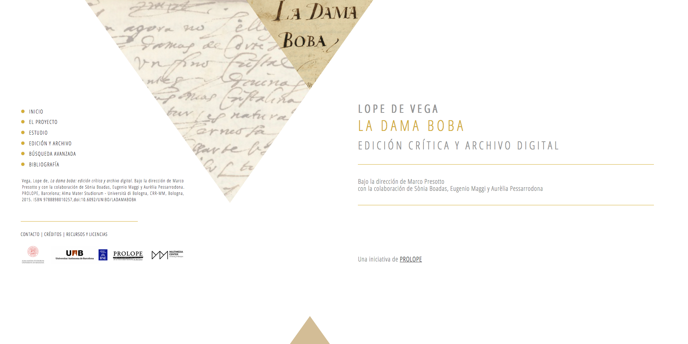
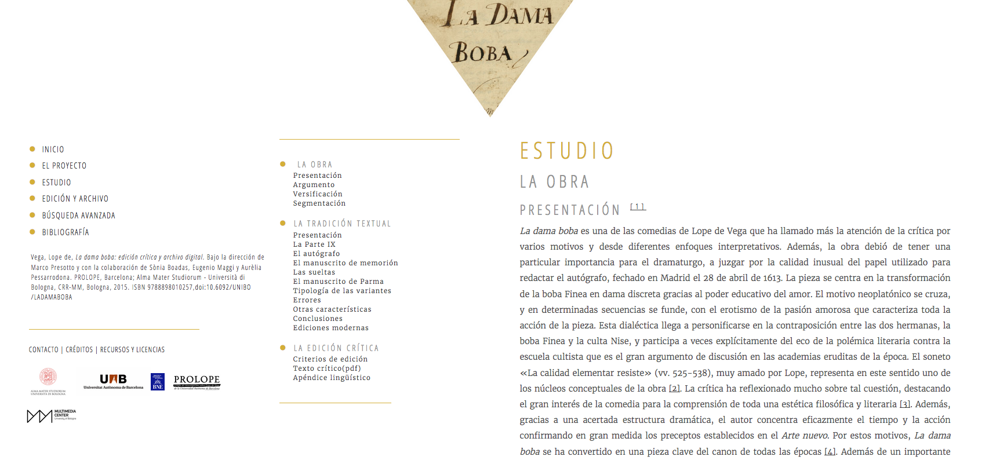
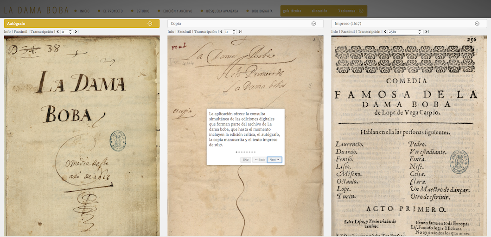
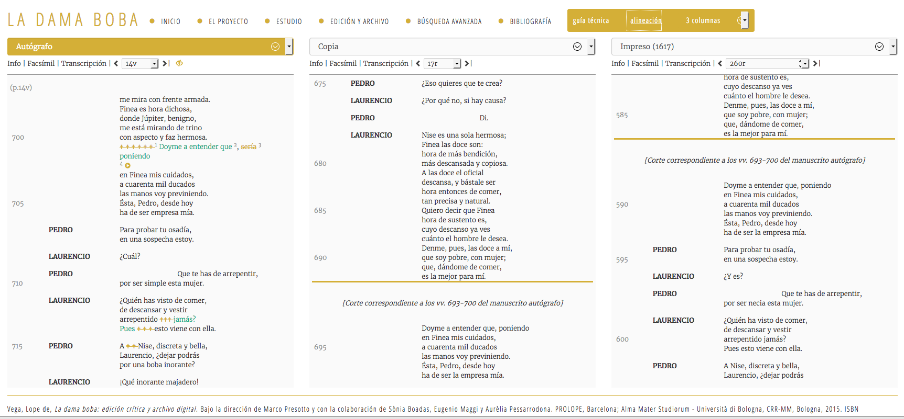
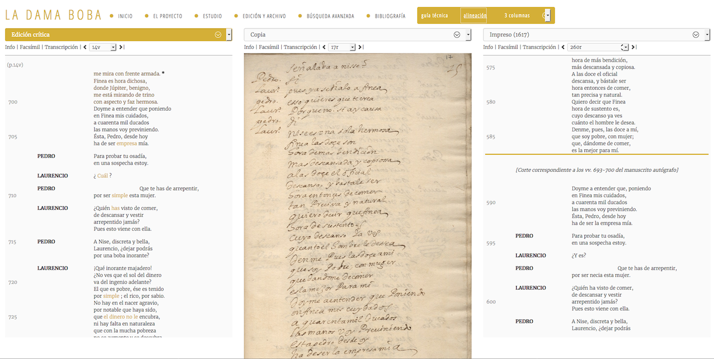
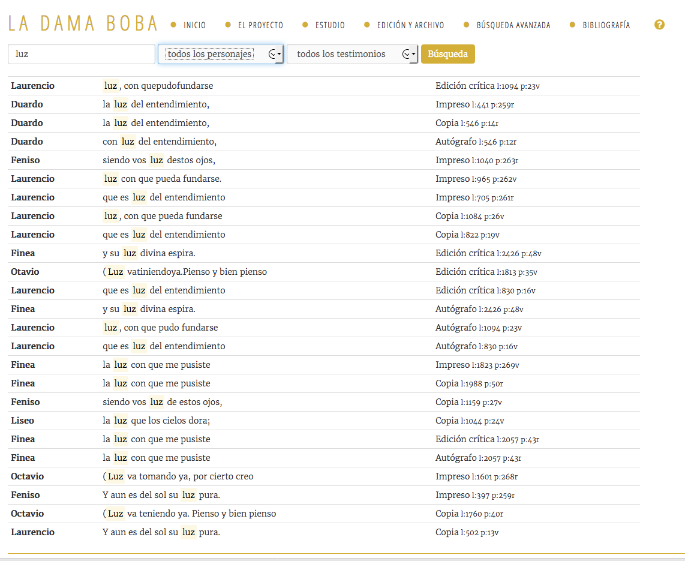

Lope de Vega’s La Dama Boba. Critical edition and digital archive
Table of Contents
Abstract
La dama boba: edición crítica y archivo digital is an ambitious project that focuses on the history of Lope de Vega’s play. It gives access to the facsimile and the modernized spelling transcription of three witnesses and it presents a critical text with an apparatus and explanatory notes. While it would benefit from documenting its markup and making all witnesses available for downloading, this edition succeeds in providing multiple views of the same work and it allows new inquiries to scholars interested in the transmission of the text.
Introduction
Although not well known in the English-speaking world, Félix Lope de Vega’s plays proved a great success in seventeenth-century Spain. Author of more than 500 plays, Lope was a playwright, novelist and poet and his fame was second only to that of Miguel de Cervantes. La dama boba (‘A Lady of Little Sense’) excels as a unique composition of his where the Neoplatonic theory of love meets intrigue, misunderstanding and pure entertainment.
In 1609 Lope de Vega published his manifesto Arte nuevo de hacer comedias en este tiempo (‘New Art of Writing Plays in This Time’). In this treatise the author justified his style and defended his right to break with the three Neo-aristotelian unities of place, time and action. The so-called “Nueva Comedia" (‘New Comedy’) encompasses three acts instead of the traditional five and blurs the distinction between comedy and tragedy. In the New Comedy, the plot is complex, with multiple parallel actions, and the language is characterised by its lyricism and metrical variety. Lope de Vega’s plays satisfied the audiences, and they were performed in popular theatres; some attendees also took it upon them to produce copies of the play for sale by memorizing it and, presumably, by taking notes. It goes without saying that these copies contained abundant errors. As a result, in 1617 Lope de Vega decided to engage in an editorial project consisting in the supervision of the printing process of his plays.
La dama boba was completed in April 1613. It narrates the story of two sisters, Finea and Nise. Finea is the lady of little sense referred in the title, who has inherited a considerable fortune, whereas Nise is a more educated, but poorer lady lacking suitors. The play focuses on Finea’s transformation into an educated lady thanks to the power of love and it ends with the double marriage of the sisters with the noblemen Laurencio and Liseo, respectively.
La dama boba: edición crítica y archivo digital was launched in 2015. In the section “¿Por qué una edición digital?", the editor states explicitly that the edition is aimed at scholars and researchers and that its focus is the textual transmission of the play. It is an ambitious project that aims to combine both an idealistic and a documentary approach to the editing of the text. On the one hand, the edition offers a ‘best text’ with an apparatus of variants; on the other, it provides access to the transcriptions and facsimiles of the three documents taken into account for the constitutio textus. The edition presents the editor’s hypotheses regarding the text, for instance, by showing the reader the editor’s view of the chronological sequence of textual interventions. At the same time, it gives access to the documents that support the editor’s hypotheses and allows the researcher to study how the printing process and the performance of the play on stage may have altered the original text composed by the author in 1613.
The digital edition is the result of a collaboration between the Prolope group (Universitat Autònoma de Barcelona)1 devoted to the edition of Lope de Vega’s collected plays, the Università di Bologna and the Biblioteca Nacional de España. The main researcher is Marco Presotto (Università di Bologna), the main editor of the previous printed edition of La dama boba (Lope de Vega, 2007). The website, however, credits a number of collaborators responsible for the encoding (Sònia Boadas, Eugenio Maggi, and Aurèlia Pessarrodona), web developers (Marilena Daquino and Raffaele Messuti), and a scientific adviser (Francesca Tomasi). The team also acknowledges some digital projects (La entretenida,2 Biblioteca Digital Artelope,3 Jane Austen’s Fictions Manuscripts,4 Digital Variants,5 and Manuscrito Digital de Juan Goytisolo 6) that inspired them.
Subject and content of the edition
La dama boba has seen many printed editions and adaptations. Previous to this digital edition, it was published in digital format by the Biblioteca Virtual Miguel de Cervantes (Universitat d’Alacant)7 and the research group Artelope (Universitat de València).8 The first publication is a naked HTML page giving access to a text published in 1946. In addition, it contains a concordance tool that allows the reader to search and find words. The second publication is superior because it enriches the text by using markup; for instance, it highlights stage directions and it reveals some information on metrics when clicking on a button.
From a scholarly point of view, La dama boba: edición crítica y archivo digital excels the aforementioned digital editions. To begin with, this new digital edition contains a number of explanatory materials about the plot, the number of verses and types of stanzas that all help the reader to appreciate the aesthetic value of the work. The greatest contribution, however, is its focus on the history of the text, the writing process and its performance on the stage. The editor selected three sources to establish the best text:
- Witness O: an autograph dated 1613
- Witness A: a printed edition approved by the author dated 1617
- Witness M: an illegal transcription by an attendant at an actual performance of the play in the seventeenth century.
The edition presents the facsimile and the transcription of these three sources in a synoptical view. These documents represent different phases in the life of the piece: first, the autograph reflects the creative process; second, the printed edition, which was supervised by the author, shows us the social dimension of the printing process and it may, in comparison with the autograph, indicate cases of censorship; third, the illegal copies of the play document how the text was performed by actors on stage. The editor claims that only these witnesses are valuable from an editorial perspective; while other documents may transmit the text, too, they are, according to the editor, derived from the three presented ones. Although there are more documents available, the criteria of selection seem reasonable, given the goals of the edition. The editor chose three significant instantiations of the text, which allow the reader to track the modifications from the inception of the text to its dissemination as a book or as play. Moreover, the structural set-up of the edition should allow for a straightforward addition of further documents, should new research questions about the transmission of La dama boba arise.
Witness O contains a number of interventions such as deletions, additions and substitutions by the author that allow the editor to track the writing process and which allow us to argue that the revision of this work was in itinere. The other two witnesses (A and M) are related from an editorial point of view since both derive from the same (lost) original, containing a shorter version of the work probably supervised by the author. The editor argues that Lope revised the original during the printing process of the editio princeps by 1617.
In the section “La tradición textual", the editor also describes the sources and presents his hypothesis on the variants. In summary, textual variation may be seen as a rewriting intervention but also as a process of corruption in which printers and scribes omitted and replaced text (it should be noted, however, that the illegal copy amends some errors contained in the first printed edition). The introduction (called ‘Estudio’) also covers topics such as plot, type of stanzas, and a typology of variants. From my point of view, the whole introduction to the work could be more concise. The total number of words is 15,456. This extensiveness may work in a printed book, but reading long texts on screen is commonly experienced as tiresome. Finally, it must be noted that the inclusion of more explanatory notes and additional contextual materials are already taken into account in the section “Desarrollos futuros del proyecto" (‘Future development’).
Aims and methods
The rationale for La dama boba: edición crítica y archivo digital can be found in the section “¿Por qué una edición digital?". The editor chose the autograph dated in 1613 as the base text and he aimed to establish a critical text but also give access to the two documents that he collated. As such, the critical text is presented with an apparatus of variants and explanatory notes.
The editor states that his editorial decisions must be understood in the light of the Italian tradition of the so called filologia d’autore. This is an interesting remark in the lights of a recent debate in Spain concerning the relationship between the French critique génétique and the Italian filologia d’autore (Vauthier, 2014). According to Cesare Segre (1995), the critique génétique tries to track macrostructural changes (for example, additions, modifications or deletions of entire sections) and so editors usually present full texts or facsimiles in chronological order (dossiers, archives). In contrast, the filologia d’autore privileges the best text but, at the same time, is interested in microstructural variation concerning a few words that can be represented in a critical apparatus. Pace the editor's claim, it seems to me that La dama boba: edición crítica y archivo digital contains characteristics from both schools. On the microstructural dimension, it represents variants in a critical apparatus, a feature typically associated with filologia d’autore; on the macrostructural dimension, it gives full access to texts that represent a diachronic movement (variance), a feature typically associated with critique génétique. Thus, although this is not explicitly stated by the editor, I believe that La dama boba combines the two aforementioned theories of editing.
The edition provides facsimiles of the three documents in a very good quality. In fact, both manuscripts and the printed edition had already been digitized by the Biblioteca Nacional de España and were available in the Biblioteca Digital Hispánica.9 In the transcriptions, the edition offers a modernized spelling of the full text of each document (with a few exceptions such as the authorial interventions contained in the manuscripts A and M). The criteria employed in the modernization, however, remain opaque to a certain extent since no detailed explanation is offered; instead, the editor provides a link to the Prolope website, where the reader can download a PDF version of the editorial criteria.10
In “¿Por qué una edición digital?", the editor also states that the
transcription of each document was encoded according to the TEI Guidelines. The
edition fails, however, to provide the reader with a documentation of the encoding
principles that guided the transcription. Moreover, the only TEI file available for
download is difficult to find and it corresponds to the critical text instead of the
text of the three witnesses. In other words, the user has no access to the encoding
of the three sources but only to the encoding of the edited text. This lack of
documentation, no doubt, is one of weakest points of the edition. In fact, it is not
even stated that the double end-point method11 was employed to create the apparatus of variants. This information can only
be found in the <teiHeader>.
The reader, however, can find an account of the tool used to encode the texts. The team adapted a Wiki platform to integrate a visual editor called AnnoTEIted. This editor enabled the encoders to collaborate in the mark-up of the text. The reader is also told that the manuscript page was chosen as the reference system unit for the annotation of the texts. As a result, each page was encoded as a single TEI file. In the final phase the resulting files were combined to create the digital edition.12
Publication and presentation


The edition also contains a bibliographic list that gathers all the references mentioned in the introduction. Unfortunately, the references in the text and the bibliographic entries are not linked so the reader has to navigate back and forth between the alphabetical index and the main text.


- Metadata (called “Info")
- Facsimile
- Transcription
The user can browse the edition per document page. The documents may be aligned by clicking on “Alineación" in the top right of the website. This is a very useful function that facilitates the navigation and maintains the documents synchronized with the document placed in the left column. If the user browses the transcription of the autograph, s/he can visualize the interventions contained in this document: deletions in yellow strikethrough text and additions in green text. Some of these interventions may be animated when pressing the play icon; for an example, see folio 14v (represented also in Fig. 4). I find this feature especially interesting to display transpositions and also to recreate the chronological order of the interventions by using superscript numbers. However, the user cannot pause the animation and inspect each state of the text.


As already mentioned, the edition only offers access to the TEI file containing the critical text (even if difficult to find). One may be able to generate the transcription of all the witnesses with XSL transformations by replacing the lemmata with the respective variants. But ideally the underlying XML structure would be visualized in the same edition page as a fourth view option.13 This would be especially useful for researchers interested in the transmission of the text and the encoding of variants. Similarly, the version suitable for printing in PDF format cannot be accessed from the edition page; it is only available in the section “Resources". Finally, the user cannot retrieve and link a specific folio or a specific section of the critical text by means of a URL; this is unfortunate and should be rectified by the editor as soon as possible since without the possibility to reference, scholars will not be able to use the edition as evidence in their publications. These criticisms notwithstanding, the contents are clearly licensed, the resource has a persistent identifier (DOI) and the main information necessary for citation is always visible.
Conclusion
This digital edition has to be understood as a project undertaken by an experienced scholar who has previously published a printed edition of La dama boba. The main focus of the edition is the history of the text. The editor aimed to surpass the edition model of the print-paradigm and combined an idealistic and materialistic approach to the editing of the text. To achieve this, his team developed a digital infrastructure that can display a number of documents in multiple views without refusing to privilege the critical text.
The focus on the history of the text, however, may limit its audience to those scholars interested in questions of textual variation. In contrast, the addition of an index of named entities would be appreciated by those users aiming to study the text from a literary point of view. Moreover, visual and contextual information could expand its audience beyond academia. Finally, the expansion of the documentation and a description of the encoding model of the text would notably increase the value of this edition.
All in all, La dama boba: edición crítica y archivo digital should be appraised positively because it meets its declared goals: on the one hand, to give access to a critical text and the documents that support the editor’s choices; on the other, to allow the user to study three different versions of the work from its inception to its public dissemination on the stage and in book shops. The editor justifies accurately the editorial method adopted and the presentation of the data is beautiful and user friendly. The result is a state-of-the-art scholarly resource that lives up to the digital paradigm. First, it combines a microstructural and a macrostructural approach, giving the readers access both to a critical text as well as to document witnesses. Secondly, it doesn’t merely present the documents for the users’ inspection, but represents them using a standardized TEI model. Thirdly, it provides a well-designed and beautiful web-presentation which allows for comparisons by utilizing animations, strikethroughs and various colours; the automatic alignment function also helps the user not to lose track of the changes in all documents, which would be very difficult if s/he had to deal with all of them in a physical library.
In conclusion, although some improvements may be necessary in the near future, the edition is valuable because it provides multiple views of a single work and enables new inquires to researchers interested in the creative process and the transmission of the Lope de Vega plays.
Bibliography
- Lope de Vega, F. 2007. Comedias de Lope de Vega. Parte IX. Coordinated by Marco Presotto. Lleida: Milenio.
- Presotto, M. 2015. ‘Hacia un modelo de edición crítica digital del teatro de Lope.’ Anuario Lope de Vega. Texto, literatura, cultura XXI: 79-94. https://web.archive.org/web/20161102163902/http://revistes.uab.cat/anuariolopedevega/article/view/v21-presotto/115-pdf-es.
- Segre, C. 1995. ‘Critique des variantes et critique génétique.’ Genesis 7: 29-46.
- Vauthier, B. 2014. ‘¿Critique Génétique y/o Filologia d’Autore? Según los casos… “Historia" —¿o fin?— “de una utopía real".’ Creneida 2: 79-125 https://web.archive.org/web/20161102164042/https://www.uco.es/ucopress/ojs/index.php/creneida/article/view/3529/3417.
Notes
- http://web.archive.org/web/20161102160020/http://prolope.uab.cat/. ↑
- http://web.archive.org/web/20161102160646/http://entretenida.outofthewings.org/index.html. ↑
- https://web.archive.org/web/20161102161855/http://artelope.uv.es/biblioteca/. ↑
- https://web.archive.org/web/20161102162001/http://www.janeausten.ac.uk/index.html. ↑
- https://web.archive.org/web/20161102162106/http://www.digitalvariants.org/. ↑
- https://web.archive.org/web/20161102162246/http://goytisolo.unibe.ch/. ↑
- https://web.archive.org/web/20161102162454/http://www.cervantesvirtual.com/obra-visor/la-dama-boba--0/html/ff8e86f8-82b1-11df-acc7-002185ce6064_1.html. ↑
- https://web.archive.org/web/20161102162740/http://artelope.uv.es/biblioteca/textosAL/AL0575_LaDamaBoba. ↑
- https://web.archive.org/web/20161102162857/http://www.bne.es/en/Catalogos/BibliotecaDigitalHispanica/Inicio/. ↑
- https://web.archive.org/web/20170126111950/http://prolope.uab.cat/obras/criterios_y_materiales_para_la_edicion.html. ↑
- https://web.archive.org/web/20170126112228/http://www.tei-c.org/release/doc/tei-p5-doc/en/html/TC.html. ↑
- For further details on this tool, see Presotto (2015). ↑
- For an example of a genetic edition offering comparisons between critical text, facsimile and encoding, see The Shelley-Godwin Archive. ↑
@article{damaboba,
author = {Rojas Castro, Antonio},
title = {Lope de Vega’s La Dama Boba. Critical edition and digital archive},
journal = {RIDE – A review journal for digital editions and resources},
number = {5},
year = {2017},
doi = {10.18716/ride.a.5.3},
url = {https://doi.org/10.18716/ride.a.5.3},
}TY - JOUR
AU - Rojas Castro, Antonio
TI - Lope de Vega’s La Dama Boba. Critical edition and digital archive
T2 - RIDE – A review journal for digital editions and resources
IS - 5
PY - 2017
DA - 2017/02
DO - 10.18716/ride.a.5.3
UR - https://doi.org/10.18716/ride.a.5.3
PB - Institut für Dokumentologie und Editorik e.V.
LA - en
ER - Rojas Castro, A. (2017). Lope de Vega’s La Dama Boba. Critical edition and digital archive. RIDE – A review journal for digital editions and resources, (5). https://doi.org/10.18716/ride.a.5.3Rojas Castro, Antonio. "Lope de Vega’s La Dama Boba. Critical edition and digital archive." RIDE – A review journal for digital editions and resources, no. 5, 2017. https://doi.org/10.18716/ride.a.5.3.Rojas Castro, Antonio. "Lope de Vega’s La Dama Boba. Critical edition and digital archive." RIDE – A review journal for digital editions and resources, no. 5 (2017). https://doi.org/10.18716/ride.a.5.3.